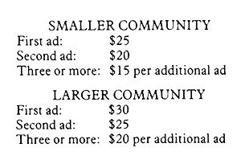
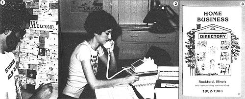

Promoting other people's bootstrap efforts can be profitable for both them and you!
A few years back, my friend Paula Vineyard and I decided to venture to our own home busi ness. When we looked into advertising the product we hoped to sell, though, my partner and I were amazed at the high costs involved. Expensive radio or television commercials were out of the question for us. So we checked into the possibility of a Yellow Pages listing . . . and discovered that (in our area, at least) the cost for the smallest entry was about $45 per month. One last bastion of hope was the community's daily newspaper. We investigated that avenue and sadly found that a 1 "X 2" display ad cost $14 for each insertion.
At that price it wouldn't take very long to deplete our entire advertising budget! In desperation, Paula and I did the only thing we could. We printed business cards, and left them posted on bulletin boards throughout the area. Then we resigned ourselves to sitting back and crossing our fingers . . . hoping our customers would manage to find us.
Sadly, during the winter of 1981-1982 our sales reached a dangerously low level, and we had to fold. My partner and I closed our endeavor on Friday, February 19, 1982 with exactly $14.60 in the company checking account. We had no jobs or business prospects. The future looked bleak.
Paula and I began brainstorming for new ideas almost immediately. Yet every enterprise we thought of seemed doomed to failure because of high start-up and promotional costs. It was then that we began to visualize a home business directory. After all, we had learned (the hard way) that most self-run enterprises simply cannot afford conventional advertising. So, we asked ourselves, why not come up with an effective solution to that problem . . . and capitalize on it?
We phoned our self-employed friends and acquaintances and asked whether they'd be interested in participating in a directory of home-based businesses. Almost everyone we talked with was enthusiastic about the project, so Paula and I sunk our last $14.60 in a small classified advertisement for the local newspaper to seek out other potential advertisers ... and raced forward from there.
Well, it's been more than a year now since we printed and distributed our first Home Business Directory. In that time we've produced several such guides-covering four counties in northern Illinois -and are both making full-time incomes from our endeavor!
According to the Small Business Administration, the number of home-operated U.S. enterprises is on the rise. Ten years ago, there were only 2.5 million such businesses . . . today there are nearly 5 million . . . and estimates indicate that in another ten years there will be 10 million. With such a growing number of run-it-yourself operations springing up in this country, publishing home-based business directories can provide you with an excellent part time-or eventually full-time income.
Exactly how much money are we talking about? Well, let's look at some conservative figures. If you live in an area with at least 35,000 people, draw 200 advertisers for your guide, and work 20 hours a week (over a period of four months), you should be able to make $2,500 profit from one directory. Cover larger areas, publish more directories, or attract more advertisers (while, of course, working more hours), and your income will rise from there!
And one of the biggest advantages of this income opportunity is the small initial investment. You can virtually start "on a shoestring", since any ads you sell are paid for as they are placed. Front money, then, is not a major requirement of this home business. Instead, it's much more important that you be a self-starter who likes people and is able to organize well.
First of all, you must remember this: If you collect ad money for a directory, and said directory is never published-for any reason you'll have to repay every dime to your advertisers or else you'll be in deep trouble. (Angry advertisers and lawsuits are only some of the problems you'll have to deal with.) So be sure to finish what you start!
Second, it really does take a population of at least 35,000 to support a directory. But then, you don't need to limit yourself to just one town. Two of our publications covered whole counties!
Third-and I tell you this from experience's frightfully easy to spend all that ad revenue as it comes in without setting anything aside to cover the expenses of printing and distributing the directories. To avoid that calamity, deposit-from the very start-a minimum of 60% of all the money collected into a separate bank account. This should be enough to meet all your expenses . . . with any remainder earmarked as a bonus for a job well done.
My fourth bit of advice involves you, the law, and the IRS. You'll need to research and follow all local codes and ordinances regarding the setting up of a home business. (These restrictions will vary from place to place.) In addition, keep good records for income tax purposes.
And finally, you will-in all likelihood meet people who will tell you on Monday that they want to advertise . . . but why, when it comes to actually parting with the cash on Friday, will experience a change of heart. Don't be discouraged by those folk, They'll constitute a minority of your contacts. But likewise, try not to rely heavily on verbal agreements.
We've found that in a small community with a population of 35,000 to 75,000, a rate of $25 for a six-line ad is reasonable And $30 for a similar ad is a good price to charge in more populated areas. Of course, you may discover that an advertiser will want to publish ads under several different categories. So, by giving a price break for multiple entries, you may well encourage your clients to spend more money.
This is our rate schedule, which you may want to use as a guide:
Let's suppose your targeted market are a smaller community, and therefore each adcarries a $25 price tag. A minimum of 200 listings will yield a gross income of $5,000 and, subsequently, a net profit of about $2,500 (printing expenses and other costs will consume about half of the total revenue you take in).
The end product can be as starkly functional or as elaborate as you like. We use 20pound, plain white bond paper, 8-1/2" X 11 ", folded in half, for the interior of the directory. We print our covers on 90-pound card stock, which is also "standard" size, folded in half. This produces a finished book of 8-1/2" X 51/2". To bind the pages together, we have the printer "saddle stitch" them. (This magazine uses saddle stitch binding. However, although THE Mother Earth News requires three staples in its center spread, your directory should need only two.)
My partner and I print the name of our directory, the area it covers, and the date of publication on the front cover. (By the way, our title, "Home Business Directory", is copyrighted . . . so you can't use it. There are a lot of other possibilities for names, however. Be sure to choose one that people will understand and that helps explain the book's contents.) We use a very simple format on the inside pages: no logos or graphics . . . just paragraphs set in six lines, with 40 spaces in each line. If a pica typewriter is used, this provides each advertiser with a 1 " X 4" ad.
Here's a sample ad displaying our usual format:
HENSLEY'S GLASS SERVICE Phone Address City For fast, economical service. Storm win dows, screens, doors, mirrors, desk tops,and plexiglass. Shop work only.
As you can see, the first line is the advertiser's name or business name and the telephone number. The second line carries the entrepreneur's address and city. You'll probably want to place each entry under an appropriate category (such as antiques, arts and crafts, carpentry, child care, etc.). The ads are listed alphabetically under suitable sections ... which are also arranged in alphabetical order.
We developed a form for our customers to use that has a block of space for each letter. This takes the work out of determining the length of the listing. We collect the money along with the form, either through the mail or in person. By maintaining a strict policy of no billing and no second calls, we cut down our costs considerably.
If you want your directory to look professional, you might want to have the ad listings typeset. That extra step will give the book an attractive appearance, but it isn't necessary. A good typewriter (and typist!) is effective and not nearly as expensive.
Compile a list of people you know who operate home businesses. Don't forget those "unlikely" potential advertisers such as the neighbor who decorates cakes, the person at church who makes wooden trays, or the cousin who does drafting work on the side. And ask friends and relatives to add to your list any bootstrappers they know.
Once you've exhausted your own sources, scan the local newspapers. In Rockford, Illinois we have seven area papers: a daily, a weekly newssheet, a union paper, two church publications, an ethnic newsletter, and a weekly shopper. Paula and I went through each one, marked any ad that looked as though it might be for a home based business, then added those advertisers to our prospects list- It's also a good idea to check community bulletin boards in laundries, grocery stores, cafes, lumberyards, and hardware stores for business cards. (Consider posting your own notice up on the board, stating that you're compiling a directory of home-based businesses, and requesting interested parties to call.) Finally, ask anyone who places an ad with you for the names of other potential advertisers.
As a rule of thumb, roughly a third of the names on your list will be inclined to buy space in your directory. But keep all the names, and add new prospects as you locate them. It'll prove invaluable when you compile your next-enlarged-edition. (You should be able to publish a directory for one area twice a year.)
Paula and I have used two different approaches in selling ads for our directory. In the first community we served, we called prospective clients on the phone and explained the idea to them. (We learned that calling is most effectively done between 3 p.m. and 9 p.m. Monday through Thursday, and between 9 a.m. and noon on Ft Fridays and Saturdays.) Whenever an owner seemed receptive, we promptly sent that individual a form-along with price quote. and mailing information-and followed up with another phone call if the businessperson didn't return the listing by the stated due date.
For our second attempt my partner and I called prospective clients on the telephone, explained our concept, and then made an appointment to visit the potential advertiser in person. During the get-together, we'd answer questions, show a sample directory, and assist the client in writing the ads.
Both methods have advantages and disadvantages. If you're limited in time and mobility, you'll probably elect the first technique . . . and find it to be quite effective. Not surprising ly, though, you'll likely achieve even greater results if you're able to make "house calls".
Set on a specific deadline and stick to it, even if it means not getting in touch with everyone on your prospects list. If you delay publishing the directory, your clients will be disappointed and your credibility will be damaged. In our experience, the entire project requires a four month timetable. It takes about three months to form the prospects list, collect the ads, and prepare the final copy for the printer. During the fourth month, the publication is actually printed and distributed. So if you plan to release a directory on May 1, you'd better start by January 1.
After Paula and I have gathered all the ads we plan to sell, we organize the order blanks alphabetically by categories. Then I type up the "proof copy". The pages of the proofs should look exactly the way you want the finished product to appear. I make mine -one at a time-by inserting a standard she et of typing paper sideways into my typewriter, and then neatly typing up the entries. I keep my line of type 4 inches long, maintaining 3-1/2inch margins on either side, and leaving 1inch gaps at the top and bottom of the sheet.
I never start an ad on a page unless it can be completed on the same sheet. If that's not possible, but there's still extra room at the bottom of my paper, I type in a filler blurb (plugging the directory, naturally) to take up the leftover space.
The proof copy will indicate how many pages your book will have. Four of your pages will fit on one of the printer's sheets (the sheet will include two pages-a front one and a back one-in both halves of the book), so you'll have to give the printer a number of pages that's divisible by four. For example, if your typed proof sheets total 49, you'll have to go to the next multiple of four, which is 52 pages, or 13 large printer's sheets. (You can take up the slack by leaving a few blank sheets at the beginning and end of the directory.)
And believe me, you'd be economically prudent to take a little extra time and shop around for a printer. Paula and I called a great many in our area, and found a lot of difference in quoted prices. We finally selected a man who charged a full 2007o less than anyone else we had looked into, and he was the tenth printer we'd talked to!
Naturally, you'll want to strive for the greatest possible accuracy, so you'll have to proofread each ad carefully. We double check the spelling of names and the numbers in addresses and telephone listings, and usually find it useful to compile an index of advertisers.
We print at least 15 copies for every ad that's published in the directory. For instance, if you've sold 100 ads, you'll want to print a minimum of 1,500 copies . . . and 150 ads translates into 2,250 copies.
Another good rule of thumb is this: If you live in a town of 40,000 people, then statistically speaking-that community has about 10,000 homes. If you print and distribute 4,000 copies of your directory, you'll potentially have reached more than one third of the homes in your target area. That is considered good coverage.
After the finished product returns from the printer, your first concern will be getting copies to each one of your advertisers (We also make a point to include a personalized letter of thanks to each one.) Then bundle up packets of the booklets, and drop them off at places that cater to consumer, such as real estate offices, insurance agencies, cafes, barber shops and beauty salons, laundromats, and consignment shops. (Of course, always obtain the owner's permission before leaving directories at any particular outlet.)
Paula and I take this idea one step lf u ether. After letting a potential distributor -whose enterprise obviously should not compete with any of those in your guide!see the directory, we explain that we plan to run a notice in the local newspapers announcing "guide giveaway" points. If that proprietor wants to be listed in this notice, we ask for a $5.00 fee and then give him or her 100 copies of the book to distribute. The money we collect from several of these storekeepers covers the cost of the newspaper notice! (And lots of people do answer the ad and pick up a directory.)
Sometimes you'll receive letters from advertisers, distributors, and satisfied customers giving positive comments about your service. Hang on to these, as they'll make effective advertisements for your next directory. (Don't ever make up quotes, though: That's not ethical business behavior.)
Please remember that publishing a home business directory is not an easy way to "get rich quick". It's hard work and requires a great deal of organization and time. But then, the project is more than just monetarily rewarding. Paula and I are proud that our directories have helped more than 25 new home businesses get off the ground. In addition, we've seen others expand-sometimes from ,part- to full-time enterprises!-because of the business generated by our efforts. Thus we've made a difference in the lives of our customers. We like knowing that. And, as is so often the case, by helping others we've enjoyed the benefits of extra income and respect in the communities we serve.
EDITOR'S NOTE: Paula Vineyard and Don Vandeventer have written a book, How to Publish a Directory of Home Based Businesses for Fun and Profit, which contains more information Son their "home business" business, and can be obtained for $11.50 (postpaid) by writing to H.B.D. Publications, Dept. TMEN, 4711 Ottawa Road, Rockford, Illinois 61107.)
|
[1] One excellent method of locating business prospects for your directory is to consult community bulletin boards for the business cards of Iota; entrepreneurs. [2] Working at home keeps overhead"" costs to a minimum. [3] The cover of one of the author's copyrighted directories. |
 |
 |
|
|
|
|